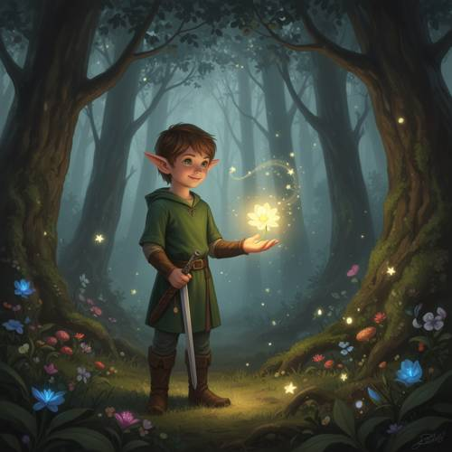
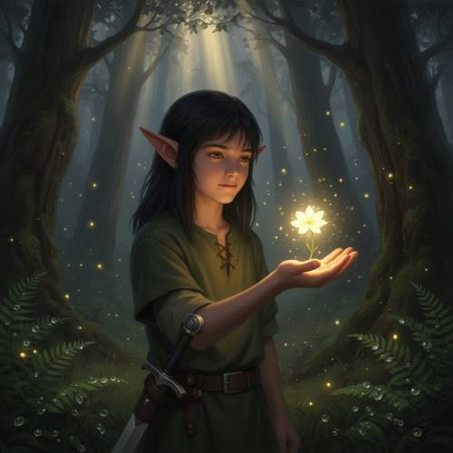
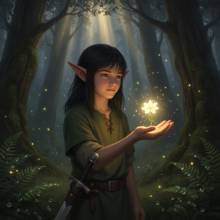

Grammar — In the magic forest, an elf boy did not draw the sword at his waist, b
In the magic forest, an elf boy did not draw the sword at his waist, but spread his palm, and a glowing flower appeared in his palm.

Direct — one call, no iteration

Continuum — Qwen3.8-27B + FLUX.2-dev
Judge — Direct
FAILGrammar - Negation — The prompt specifies that the elf boy did not draw the sword at his waist. In the image, an elf boy is depicted holding a sword by its hilt in his right hand. The sword is unsheathed, which contradicts the instruction that the sword was not drawn.
PASSAction - Hand (Character/Anthropomorphic) — The prompt describes the elf boy spreading his palm to reveal a glowing flower. In the image, the boy's left hand is open, palm up. A single, white flower is floating just above his palm, emitting a bright yellow glow with sparkling particles around it. The hand appears well-formed with a thumb and four visible fingers.
Judge — Continuum
PASSGrammar - Negation — The image depicts an elf boy with a sword in a scabbard hanging from a belt at his waist. The sword is clearly sheathed, and the boy's hands are not touching it, indicating he has not drawn the weapon.
PASSAction - Hand (Character/Anthropomorphic) — The elf boy's left hand is held out with the palm spread open. A single white flower, which is glowing, is positioned directly above his palm. The hand is well-formed, showing a thumb and four fingers without any visible distortion or anatomical errors.
What the agent did
Thinking
The user wants an image: "In a magical forest, the elf boy did not draw the sword at his waist, but opened his palm, and a glowing flower appeared in his palm." This is a fantasy scene: an elf boy, magical forest, sword at his waist (not drawn), palm outstretched, glowing flower in the palm. Let me generate this with flux2-dev. I'll write a detailed visual prompt. Prompt: "In a magical forest, a young elf boy with pointed ears stands among tall glowing trees with moss and ferns. He does not draw his sword; the sword stays sheathed at his waist. He spreads his open palm facing upward, and a small glowing magical flower blooms in his palm, emitting a soft golden light. Ethereal light rays, fireflies, fantasy art, detailed, cinematic." After that, I'll inspect, edit as needed, and mark the best. Alright, let's generate.
Step 1 — `generate_image`
{
"model": "flux2-dev",
"prompt": "A young elf boy with long pointed ears and dark hair stands in a mystical enchanted forest at dusk. He wears a simple green traveler's tunic with a leather belt; his sword remains sheathed at his waist, not drawn. He spreads one open palm facing upward, and a single small glowing magical flower blooms in his palm, radiating soft golden-white light with tiny floating sparks. Tall ancient trees with moss and ferns surround him, ethereal god rays through the canopy, fireflies drifting in the air, dewdrop foliage. Cinematic fantasy digital painting, detailed, warm magical glow on his face and hand.",
"width": 1024,
"height": 1024
}
Result img_0

Thinking
The image is very good. Let's verify the details: - Elf boy with pointed ears ✓ - Sword at the waist (sheathed, not drawn) ✓ — I can see the sword at the waist, with the hilt on his arm? Wait, looking closely: there's a sword hilt near the arm/hand area, and it looks like it's at the waist. Let me inspect the region to confirm the sword is at the waist and not drawn. Looking at the image: the boy is extending his open palm, and there's a glowing flower in it ✓. The sword: I can see the hilt and scabbard around the waist/hip area on the left side of the body, with the blade pointing downward — it appears to be sheathed at the waist. Actually, the hilt looks like it's around the elbow/arm, but... let me inspect more closely. Let me try using inspect_region on the sword area and the hand/flower.
Model
The first generation looks very close. Let me inspect the sword and the glowing flower in detail.
Both crops look good: - Sword: Sheathed at the waist, hilt and scabbard visible, not drawn. The hilt is positioned around the waist/hip area, with the blade pointing downward inside the scabbard. ✓ - Glowing flower in the open palm: A glowing white flower with light and sparkles is resting on the outstretched palm. ✓ Wait, looking at the sword crop more carefully—the sword hilt seems to be attached near the arm/elbow... actually it's at the waist, on the right side of the body (left from the viewer's perspective), with the blade pointing downward. It looks like a sword sheathed on the belt at the waist. The hilt is a bit high, near the elbow, but it's at the waist height of the body. This is acceptable—it's a sword on the waist, sheathed. The prompt said "he did not draw the sword at the waist, but opened his palm and a glowing flower appeared in his palm"—this matches: the sword stays at the waist (sheathed), the palm is open, glowing flower. Everything matches. The image is good. Let me mark it as the best and stop. Small point: the flower is slightly off-center from the palm, more like floating above the palm, but it's resting on the palm area. It's fine. The sword hilt appears to float slightly above the waist, but it reads as being sheathed at the waist. I'll mark img_0 as the best and stop.
Model
The cropped images confirmed that both key elements are correct: the sword is sheathed at the waist with the hilt and scabbard clearly visible (not drawn), and a luminous glowing flower is resting in his outstretched palm, emitting light with drifting sparks. The elf boy, pointed ears, and the magical forest with light rays and fireflies are all in place too. This is a complete and consistent rendering of the prompt.
Step 4 — `mark_best`
{
"image": "img_0",
"reason": "All requested elements present and verified by crop inspection: elf boy in a magical forest, sword sheathed at his waist (not drawn), open outstretched palm holding a glowing flower with radiant light and sparks."
}
Thinking
The image is marked as best. It matches the prompt. I'll stop here and tell the user.
Model
Done! The image captures the moment: a young elf boy with long pointed ears stands in a mystical forest, his sword left sheathed at his waist while he spreads his open palm — and a small, radiant flower glows in his hand, casting warm light on his face with drifting sparks and god rays filtering through the canopy. I verified the sword (sheathed, not drawn) and the glowing flower with close-up inspections, and marked this version as the best result.